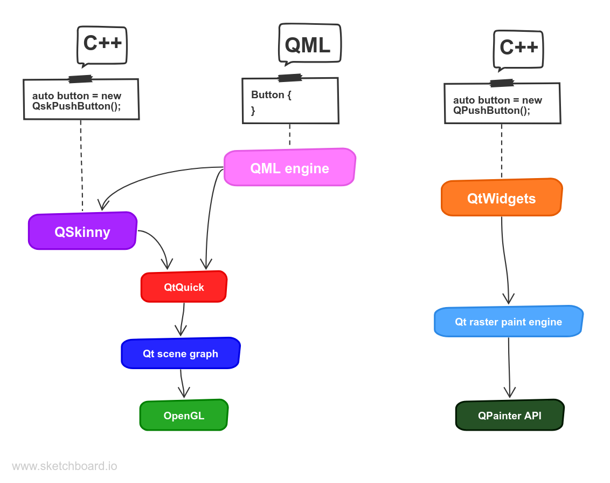

Loading...
Searching...
No Matches
01-What-is-QSkinny
Table of Contents
Tutorials
What is QSkinny?
QSkinny is a UI framework based on the Qt graphic stack and written in {cpp}. It allows users to write their UIs in {cpp} and/or QML.
The Fendt Tractor GUI

It is currently being used in the Fendt Tractor GUI project, see the picture above. For the Fendt Tractor GUI there is no QML used at all; the whole codebase is written in {cpp}. An overview of how QSkinny fits into the Qt architecture is depicted below:
QSkinny sits on top of QtQuick, while QML is optional

QSkinny architecture